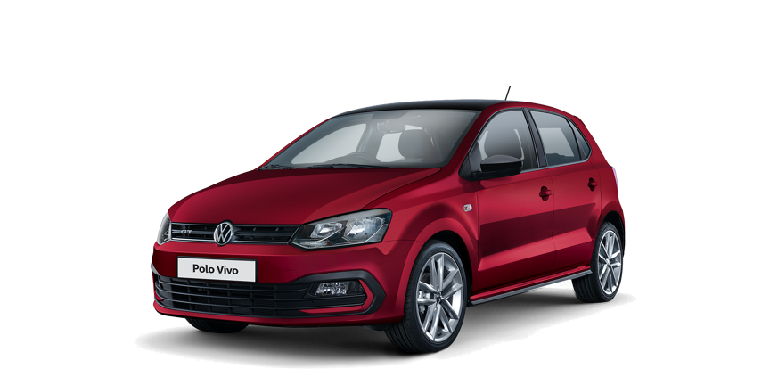

Polo Vivo
Year-on-year change +7.7%
Passenger hatch; excludes Vivo-Xpress
SourcesPassenger, light commercial, medium and heavy commercial vehicles · Exports excluded
Domestic new-vehicle sales across all reported categories · Exports and used vehicles excluded · January 2012–October 2026
Loading historical data…
Select a chart observation for its exact value.
Chart data (CSV) ↗ · Source records & audit notes (CSV) ↗ · Methodology ↗
Others combines all reporting entities outside the top ten. Figures follow each original monthly NAAMSA report. Historical market totals above can include later revisions.
Passenger, light commercial and commercial vehicles · Exports excluded
Volkswagen Group SA domestic new-vehicle sales · Passenger, light commercial and commercial vehicles · Exports excluded
2023–2024: original-month VW figures checked. February 2023 has an official naamsa Flash Report available; later flashes do not provide a restated manufacturer history. Audit details ↗
Data sources Excel (.xlsx)
January–October · 2025 versus 2026 · Domestic vehicles sold
Compiled public model figures; the Amarok baseline discrepancy remains unresolved. Select a model figure or Sources to download its numerical input workbook.
Chart data Data sources Excel (.xlsx)

Passenger hatch; excludes Vivo-Xpress
SourcesHatchback; excludes Polo Sedan
SourcesPassenger SUV
SourcesLight commercial vehicle · revision discrepancy*
SourcesJanuary–October · Rank among the four models shown, unchanged in both years. Shares use total Volkswagen Group SA sales.
| 2025 | 2026 | |||||
|---|---|---|---|---|---|---|
| Rank | Model | Vehicles | Group share | Vehicles | Group share | Change |
| 1 | Polo Vivo | 21 181 | 40.3% | 22 814 | 41.5% | +7.7% |
| 2 | Polo | 7 932 | 15.1% | 8 336 | 15.2% | +5.1% |
| 3 | T-Cross | 5 603 | 10.7% | 5 571 | 10.1% | -0.6% |
| 4 | Amarok* | 3 291 | 6.3% | 4 093 | 7.5% | +24.4%* |
| — | Other / unitemised Group sales | 14 602 | 27.8% | 14 101 | 25.7% | — |
| — | Volkswagen Group SA total | 52 609 | 100% | 54 915 | 100% | +4.4% |
Other / unitemised includes Audi, commercial vehicles and models without comparable totals.
January–October 2026 · Each point compares sales with the same month in 2025.
Select a month name or a point to see its growth rate and vehicle sales below.
Data sources Excel (.xlsx)
Excel files for each chart, original report links and worked calculations.